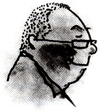

Jack Foster, haftalık çekini piyangoya ödül olarak koyma fikrine kapıldığında 18 yaşındaydı ve bir sigorta şirketindeki 150 çalışandan biriydi. 27,5 dolar kazanmak için her biletten 50 sent almayı düşünmüştü. İlk hafta altı dolar kâr etti.
Ertesi hafta, çekine karşılık kazandığı para 53 dolar olmuştu ki, patronu onun ne yaptığını keşfediverdi. Jack’a parayı geri vermesini emretti. Sonra da kapının önüne koydu. O günden beri Jack, kendisini işten attırtmayacak fikirler peşinde koşup duruyor. Başarılı sayılmalı.
Bundan 40 yıl önce bir reklam ajansına metin yazarı olarak girmişti ve o zamandan bugüne hep fikir yakalama peşinde koştu. Aralarında Carnation, Mazda, Sunkist, Mattel, ARCO, First Interstate Bank, Albertson’s, Ore-Ida, Suzuki, Denny’s, Universal Studios, Northrup, Rand McNally ve Smokey Bear gibi şirketlerin olduğu pek çok kuruluş için fikirler üretti.
Son 15 yıl içinde Foote ve Los Angeles’teki Cone&Belding’de yaratıcı bölüm yönetmeni olarak çalışıp, onu Batı Kıyısı’nın en büyük reklam şirketi konumuna getirdi. Aralarında Los Angeles Yaratıcılık Kulubü’nün “Yılın Yaratıcısı” ödülü de bulunan çok sayıda reklamcılık ödülü kazandı. Yedi yıl boyunca Los Angeles’taki Güney California Üniversitesi’nde American Association of Advertising Agencies (Amerikan Reklam Ajansları Birliği) tarafından finanse edilen ileri reklamcılık sınıfında dersler verdi.
Üç yıl süreyle de Los Angeles’taki California Üniversitesi’nde yaratıcı reklamcılık seminerleriyle derslere yardımcı oldu. Jack, Nancy ile evlendi (“En mükemmel fikir” der, “bugüne kadarki en iyi fikrim”). Tam 39 yıldır evliler. Santa Barbara’da yaşıyorlar.